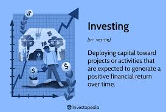
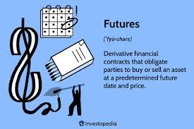
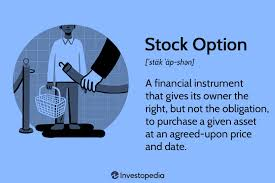
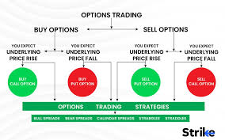

Intraday Trading Roadmap
In this website we are going to see the stock market roadmap!
Introduction: My name is Sahil Ashok Jagdale.I am right now in
second year of college.My college name is Walchand college of engineering
which is located in sangli. I am a frontend web developer and this is my
owned first website!!
- Investing : Investing
is the act of allocating resources, typically money,
with the expectation of generating income or profit in the future. It involves
putting money to work in various assets, such as stocks, bonds, real estate, or
commodities,
with the goal of growing wealth over time.

- Futures Trading : Futures trading
is a one form of Contract between two persons.Its a legal contract form
that contract seller is obliged to sell his property to buyere after some time or the time untile contracts date gets
expired.

- Options Trading:
Options trading is a one form of trading form
where we trade on less margin and we are eligible to take the advantage of this feature. But there is some risk is also involves in this type of
contract!! I always prefer to do investing prefer instead of directly investing in Options contract.

- Options Roadmap:
This is the options roadmap. I suggest you to go through it only!

All copyrights © Reserved